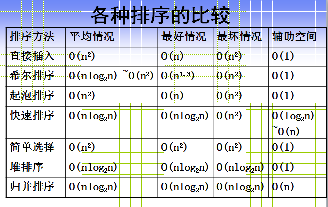

前端面试题目整理
我的理解：
面试题其实并没有特别可怕，主要考察的还是最为基础的知识以及实战过程中积累的经验。学习过程中学的越细致，知识越牢固。可能有些很简单的标签，乍一看并没有多么特殊，我们在使用的过程也只是使用它最简单，每个人都熟知的作用，却不曾想到或许它有很多的功能我们还不曾知道。有些概念性知识还是需要多看些书，javascript高级程序设计这本书真的很好，里面包含了很多面试题目的答案，而且不止是表面的解答，细细看完一定能真正理解其含义。但是知识也需要多加巩固，就像敲代码一样，我几天不敲，可能过几天手指就没有之前灵活了，容易按错字母。
1.常见排序算法的时间复杂度,空间复杂度:

2.前端需要注意哪些SEO:
答：合理的title、description、keywords：搜索对着三项的权重逐个减小，title值强调重点即可，重要关键词出现不要超过2次，而且要靠前，不同页面title要有所不同；description把页面内容高度概括，长度合适，不可过分堆砌关键词，不同页面description有所不同；keywords列举出重要关键词即可 语义化的HTML代码，符合W3C规范：语义化代码让搜索引擎容易理解网页 重要内容HTML代码放在最前：搜索引擎抓取HTML顺序是从上到下，有的搜索引擎对抓取长度有限制，保证重要内容一定会被抓取 重要内容不要用js输出：爬虫不会执行js获取内容 少用iframe：搜索引擎不会抓取iframe中的内容 非装饰性图片必须加alt 提高网站速度：网站速度是搜索引擎排序的一个重要指标
3.web开发中会话跟踪的方法有哪些:
答：cookie、session、url重写、隐藏input、ip地址
4.什么是web语义化,有什么好处:
答：web语义化是指通过HTML标记表示页面包含的信息，包含了HTML标签的语义化和css命名的语义化。 HTML标签的语义化是指：通过使用包含语义的标签（如h1-h6）恰当地表示文档结构 css命名的语义化是指：为html标签添加有意义的class，id补充未表达的语义，如Microformat通过添加符合规则的class描述信息 为什么需要语义化：去掉样式后页面呈现清晰的结构、盲人使用读屏器更好地阅读、搜索引擎更好地理解页面，有利于收录、便团队项目的可持续运作及维护
5.HTTP method:
答：1.一台服务器要与HTTP1.1兼容，只要为资源实现GET和HEAD方法即可 2.GET是最常用的方法，通常用于请求服务器发送某个资源。 3.HEAD与GET类似，但服务器在响应中值返回首部，不返回实体的主体部分 4.PUT让服务器用请求的主体部分来创建一个由所请求的URL命名的新文档，或者，如果那个URL已经存在的话，就用干这个主体替代它 5.POST起初是用来向服务器输入数据的。实际上，通常会用它来支持HTML的表单。表单中填好的数据通常会被送给服务器，然后由服务器将其发送到要去的地方。 6.TRACE会在目的服务器端发起一个环回诊断，最后一站的服务器会弹回一个TRACE响应并在响应主体中携带它收到的原始请求报文。TRACE方法主要用于诊断，用于验证请求是否如愿穿过了请求/响应链。 7.OPTIONS方法请求web服务器告知其支持的各种功能。可以查询服务器支持哪些方法或者对某些特殊资源支持哪些方法。 8.DELETE请求服务器删除请求URL指定的资源
6.什么是渐进增强：
答：渐进增强是指在web设计时强调可访问性、语义化HTML标签、外部样式表和脚本。保证所有人都能访问页面的基本内容和功能同时为高级浏览器和高带宽用户提供更好的用户体验。核心原则如下:所有浏览器都必须能访问基本内容、所有浏览器都必须能使用基本功能、所有内容都包含在语义化标签中、通过外部CSS提供增强的布局通过非侵入式、外部javascript提供增强功能、end-user web browser preferences are respected
7.css sprite是什么,有什么优缺点:
答：概念：将多个小图片拼接到一个图片中。通过background-position和元素尺寸调节需要显示的背景图案。 优点：减少HTTP请求数，极大地提高页面加载速度 增加图片信息重复度，提高压缩比，减少图片大小 更换风格方便，只需在一张或几张图片上修改颜色或样式即可实现 缺点： 图片合并麻烦 维护麻烦，修改一个图片可能需要从新布局整个图片，样式
8.display: none;与visibility: hidden;的区别:
答：联系：它们都能让元素不可见 区别： display:none;会让元素完全从渲染树中消失，渲染的时候不占据任何空间；visibility: hidden;不会让元素从渲染树消失，渲染师元素继续占据空间，只是内容不可见 display: none;是非继承属性，子孙节点消失由于元素从渲染树消失造成，通过修改子孙节点属性无法显示；visibility: hidden;是继承属性，子孙节点消失由于继承了hidden，通过设置visibility: visible;可以让子孙节点显式 修改常规流中元素的display通常会造成文档重排。修改visibility属性只会造成本元素的重绘。 读屏器不会读取display: none;元素内容；会读取visibility: hidden;元素内容
9.link与@import的区别:
答：link是HTML方式， @import是CSS方式、 link最大限度支持并行下载，@import过多嵌套导致串行下载，出现FOUC link可以通过rel="alternate stylesheet"指定候选样式、 浏览器对link支持早于@import，可以使用@import对老浏览器隐藏样式、 @import必须在样式规则之前，可以在css文件中引用其他文件、 总体来说：link优于@import
10.如何创建块级格式化上下文(block formatting context),BFC有什么用:
答：创建规则： 根元素、 浮动元素（float不是none）、 绝对定位元素（position取值为absolute或fixed）、 display取值为inline-block,table-cell, table-caption,flex, inline-flex之一的元素、 overflow不是visible的元素、 作用： 可以包含浮动元素、 不被浮动元素覆盖、 阻止父子元素的margin折叠